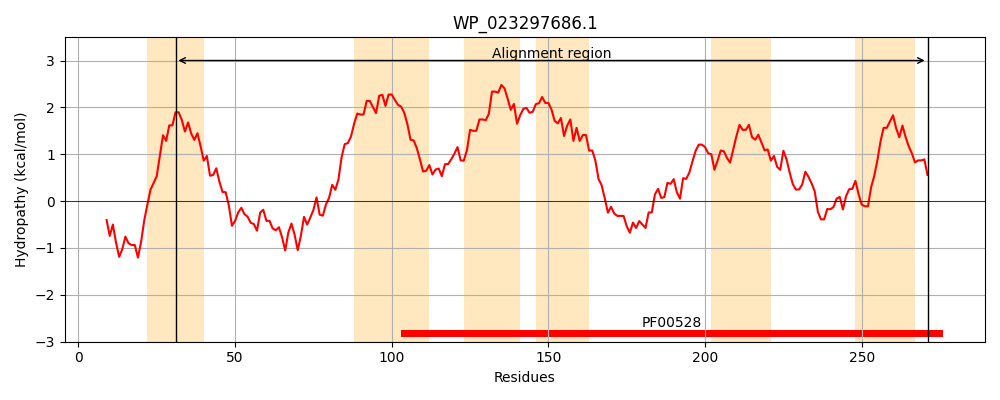
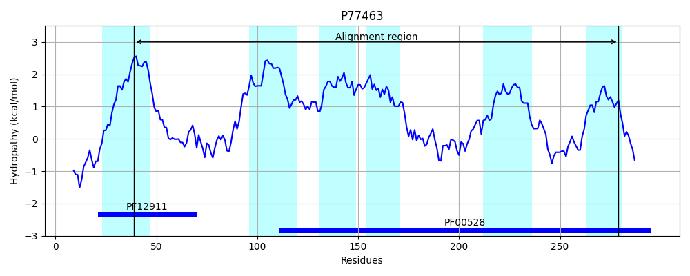
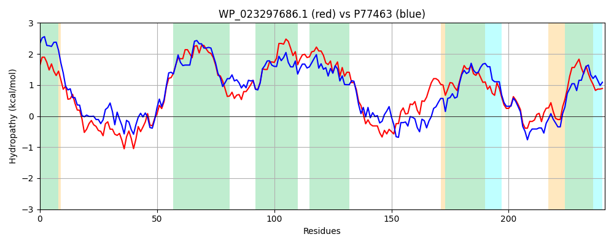

Hit Accession: P77463
Hit TCID: 3.A.1.5.38
Hit Description: gnl|BL_ORD_ID|11516 gnl|TC-DB|P77463|3.A.1.5.38 Probable D,D-dipeptide transport system permease protein DdpC OS=Escherichia coli (strain K12) GN=ddpC PE=1 SV=1
Mach Len: 241
e:0.000000
Query TMS Count : 6
Hit TMS Count: 6
TMS-Overlap Score: 5.550000
Predicted Substrates:CHEBI:72816;L-alanyl-L-alanine
BLAST Alignment:
Score: 476 , Bit scores: 187 bits, E-value: 2.6e-58, Alignment length: 241, Percentage identity: 39
Query: 31 VMITALLMALAPQWFTSANPLEGIPGAQRLAPQAHYWLGTDQLGRDLWTRVVYGAVHSLSAALIAVAIGLVVGTALGTLAGALTGRVESTIMRLVDVLLAIPSLLLQLTVIILLGFGTVNAAVAVGVAAIASFARLARAEVVRVRHSDYVEAARGSGGTFFAVFWRHILPNSLTAVLAFATLQFGQAMLALATLSFLGYGTPPPVPEWGLLIAEGRNYLSTAWWLTTFPGLAVVAVVLAAN 271
+++ LLM + W + +P A+ L P A +W GTD++GRDL++RV+ G+ S+ A L+ VAI ++G+ LG L+G L GR ++ IMR++D++L+IPSL+L + + LG NA +A+ + I + RLAR + + VR YV+AA+ G + + + HIL NSL ++ A+L G A+L ATL F+G G P EWG ++A GRNY+ WW FPG A++ + N
Sbjct: 39 IIVLMLLMMIFSPWLATHDPNAIDLTARLLPPSAAHWFGTDEVGRDLFSRVLVGSQQSILAGLVVVAIAGMIGSLLGCLSGVLGGRADAIIMRIMDIMLSIPSLVLTMALAAALGPSLFNAMLAIAIVRIPFYVRLARGQALVVRQYTYVQAAKTFGASRWHLINWHILRNSLPPLIVQASLDIGSAILMAATLGFIGLGAQQPSAEWGAMVANGRNYVLDQWWYCAFPGAAILLTAVGFN 279 | Protein Hydropathy Plots: |
|---|
|  |  |
Pairwise Alignment-Hydropathy Plot:
|
|---|
|  |